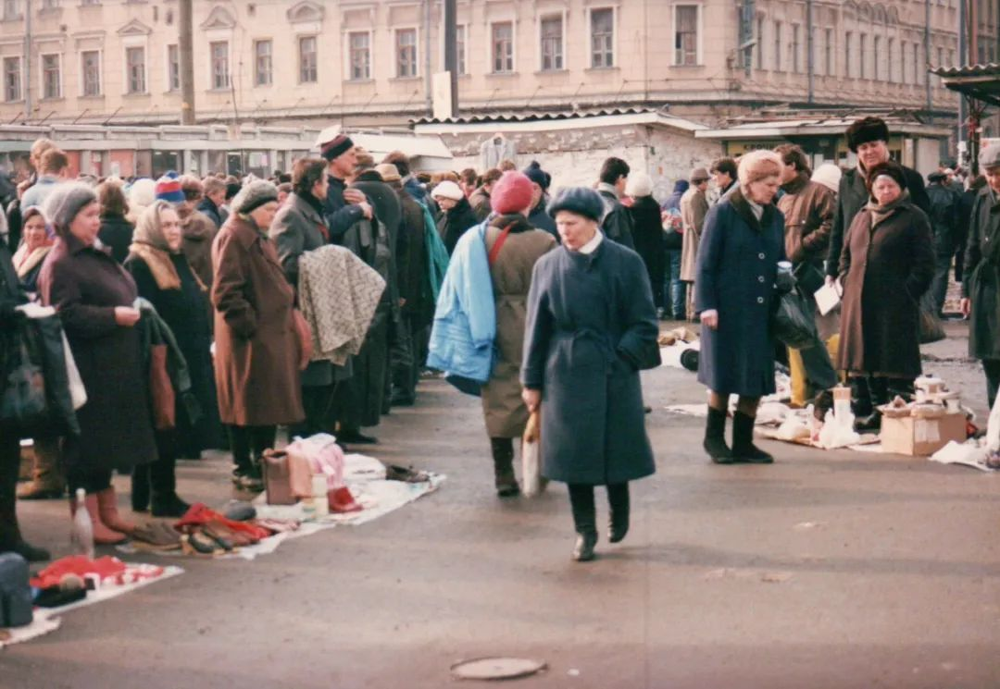
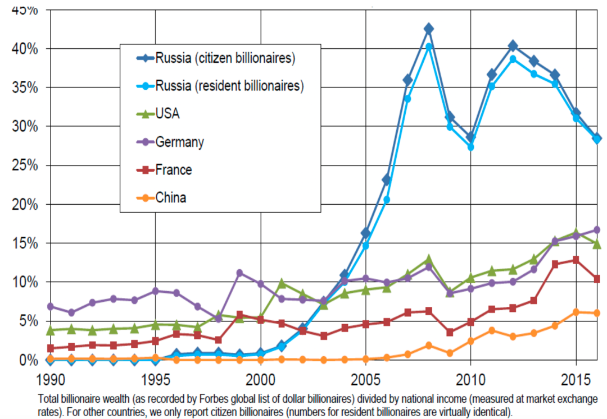
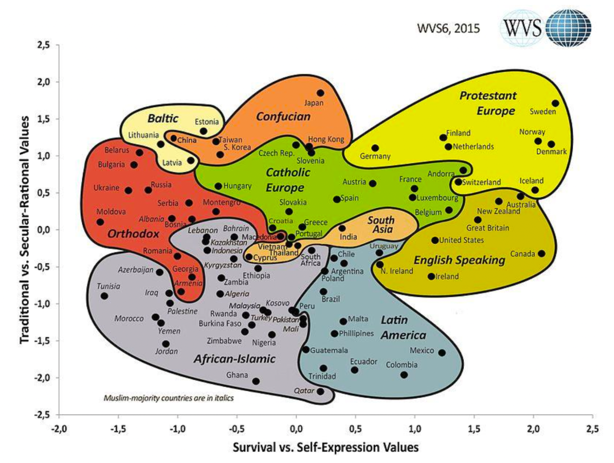
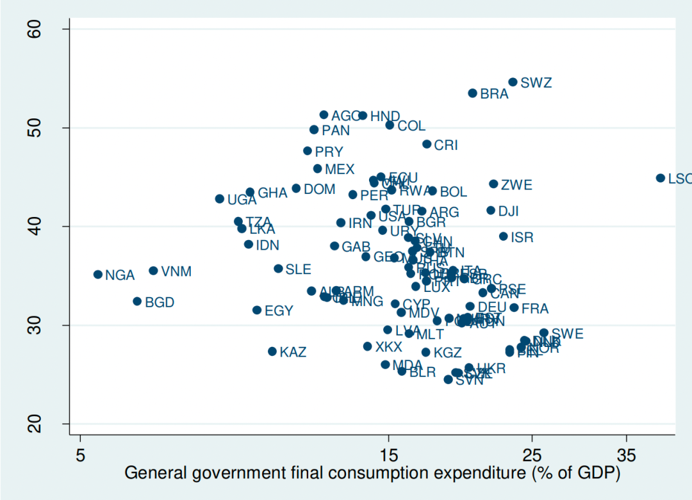
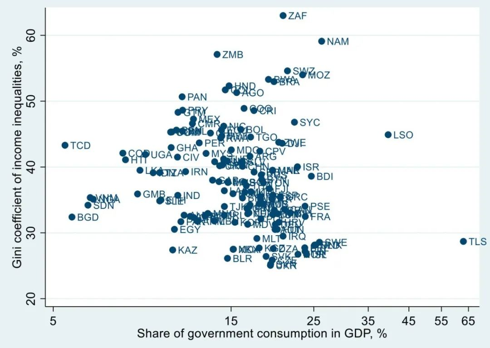
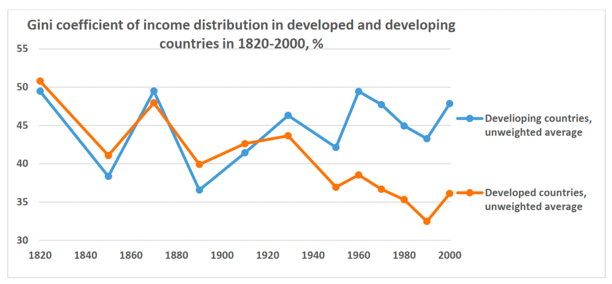

收录于合集

导读
从19世纪开始，全世界经济发展进入大转折时期，西方为主的各国迅速发展，成为“发达国家”，更广阔地区的经济却相对停滞，成为“发展中国家”或“全球南方”。 在苏联解体之后，俄罗斯经济从社会主义计划经济进入市场经济，之后一落千丈，至今未能恢复；相应的，中国却在改革开放之后，经济迅速发展崛起，经济总量上甚至超过欧洲，人均GDP也在持续接近。
俄罗斯经济学家 弗拉基米尔·波波夫 出于对“俄罗斯经济为何失败”的思考， 提出“不平等程度”和“制度能力”两个因素 ，并以“去除区域差异的基尼系数”作为“不平等程度”的客观标准，“谋杀率”作为“制度能力”的客观标准，对各国经济数据进行分析。他发现，从这一角度观察， 欧洲经济模式和以中国为代表的亚洲经济模式具有很高的相似度：都有较低的不平等程度和较强的国家制度能力。“低不平等程度”加“强国家能力”的经济模型不仅解释了为什么在上世纪80年代以后，全球南方国家中复制西方自由主义经济模式的国家、地区，经济发展情况都并不良好，反而是中国、东南亚国家的经济进入赶超，也一定程度上解释了欧美目前面临的停滞。 他认为：欧洲的经济模式形成经历了两个段落，16世纪后经济发展和社会不平等同时出现，也导致了高谋杀率和人口预期寿命的降低，19世纪后，因为与社会主义竞争的需要，欧洲开始发展“制度能力”，提高社会福利，逐渐形成“低不平等程度”加“强制度能力”的模型。模仿自由主义模式的发展中国家因为没有这两个条件，因此经济发展的基础反而遭到破坏，而较为保守、转型较迟的中国、东南亚国家因保有“亚洲价值观”，而具有了经济快速发展的条件，他称这些地方的经济模式为“集体主义经济模式”。
近年来，欧洲的不平等程度逐渐提高，破坏了增长潜力，导致了当前的国内问题，而中国和东南亚国家的不平等程度也有所提高，所以情况可能在未来发生变化，集体主义经济模式是否可以在前沿科技领域保持竞争力，并将生产效率提高到世界最高水平，也有待后续观察。欧亚系统科学研究会特编译本文，供读者思考。文章原刊于 Asia and the GlobalEconomy ，仅代表作者本人观点。
 ▲ 90年代经济不景气时期俄罗斯罗斯托夫街头的跳蚤市场。图源：wikipedia
全球南方有两种基本的经济模式：一种是西方自由主义模式的复制（主要在拉丁美洲，撒哈拉以南非洲和一些前苏联共和国），另一种被称为“亚洲价值观”模式。 所谓的“亚洲价值观”就是优先考虑集体利益（工作集体，邻里，民族国家和全人类）而不是个人的利益，限制某些人权，以造福所有人。西方自由主义传统认为至少有一些人权是不可侵犯的，但在更传统的社会中——不仅亚洲，也有全球南方的其他地区——集体主义的团结更加根深蒂固。这种集体主义的核心特征是对低收入和财富不平等有统计学上的可衡量指标，它可以促进社会凝聚力、增强国家机构的能力。
有人认为，亚洲模式的这些特征给相对强大、高效的政府留下了空间，进而促进了经济追赶发展的成功。这种集体主义经济模式主要存在于东亚国家，一定程度上也在南亚、中东和北非国家存在。 值得关注的是，欧洲经济模式，尽管几个世纪前与亚洲模式有很大的不同，在今天却非常相似：同样有相对较低的不平等程度，和相对庞大而高效的政府（尽管不是很得公众信任）。
**
**
01
** 较低的不平等程度** ****
根据世界不平等数据库的统计，撒哈拉以南非洲和拉丁美洲的财富不平等程度最高，亚洲、中东和北非的程度低于这两个地区。 东亚国家收入分配的基尼系数通常低于0.4，与欧洲相近，同时该地区收入最高的10%的群体所占有的财富份额低于美国和许多发展中国家（如印度、俄罗斯、南非）。中国的基尼系数高于0.4，但需要注意的问题是， 中国国土面积和区域差异都非常大，所以应当与整个欧洲或至少是美国进行比较。
单独核算省内（国内）和省际（国际）之间的不平等，会产生非常鲜明的结果。在中国（计算29个省），2000年代初的基尼系数超过0.4，其中的0.24应当归结与省际间发展不平等。在美国，基尼系数的值差异不大，但只有0.06是各州间的收入差距造成的。
欧盟27国，2005年左右的基尼系数整体在0.4，其中0.23是国家间的不平等造成。 如果中国能够设法将其各省之间的收入差距降低到美国各州间差距的水平，那么公民间的普遍不平等将降到相当低的水平，低于欧洲大国。
与此同时，中国的财富不平等（即“累积收入不平等”）似乎远低于其他国家。2016年， 中国的“亿万富翁强度”指标——福布斯榜单上亿万富翁的财富与国民收入之比——仅为6%，而美国、德国、法国为10-15%，俄罗斯为近30%。

▲ 福布斯榜单上的亿万富翁财富占1990-2016年国家收入的百分比
02
较强的制度能力
收入、财富上较低的不平等程度可以降低社会的两极分化程度，而且往往与更强的国家制度能力有关。狭义而言，国家制度能力是指政府执行法律法规的能力。有许多主观指标是设计用于衡量国家机构能力的（例如对腐败的控制、法制程度、政府有效性指数），但它们与客观指标不同，运用上可能存有偏见。
衡量国家制度能力的自然、客观的指标是谋杀率（即对国家垄断暴力的不服从）和影子经济（即对税务规则等政府经济法规的不服从）。 东亚、中东和北非的国家在这两个指标上都与拉丁美洲和撒哈拉以南非洲有很大差异：东亚国家的这两个指标在发展中国家当中处于最低水平，与发达国家相当。
举例来说，根据世卫组织和维基百科的数据，近几十年来，中国每10万居民中只有1-2起谋杀案，与欧洲和日本的数据接近，而美国的数据为每10万人5起。只有少数发展中国家的谋杀率能低至同等水平，这些国家主要集中在中东和北非地区；拉丁美洲、撒哈拉以南非洲和许多前苏联国家，数据则通常高出一个数量级。
值得注意的是，大多数国家的谋杀率在时间推移中保持得相当稳定，但在中国，自1990年代以来，每10万居民的谋杀率下降了近80%，从1995年的2.3起下降到2018年的0.5起。
影子经济指标上中国也有类似的表现：中国影子经济占GDP的不到17%，低于比利时、葡萄牙和西班牙。在发展中国家，这一比例通常在40%左右，有时甚至大于60%。 只有少数发展中国家能做到影子经济占如此低的份额，主要是越南和几个中东和北非国家（如伊朗，约旦，沙特阿拉伯和叙利亚）。
毋庸置疑，生产力和人均GDP的增长率也以国家制度能力为基础，因此在同样的条件下，制度能力较强的国家更有可能成为增长奇迹。到目前为止，全球南方国家/地区中，只有5个——香港，日本，新加坡，韩国，中国台湾——凭借足够高的经济增长率而加入了富裕国家俱乐部。近几十年来，东南亚和中国也在追赶发达国家。
03
不平等、国家能力、对政府的信任和爱国主义
前文已经论证了，低收入不平等与较强的国家制度能力相关（低谋杀率和少影子经济）。但为了进入细节进行分析，本文将国家分为三类：
（1）低不平等，强制度能力国家（例如发达国家和部分东亚、中东、北非国家）;
（2）较低不平等，较弱制度能力国家（例如前社会主义国家和部分中东、北非、东亚国家）;
（3）高度不平等，弱制度能力国家（例如拉丁美洲和撒哈拉以南非洲国家）。
将“世界价值调查”（World Value Survey）中几个观测民族团结的几个标准进行分析，可以观察到，对政府的信任程度和为自己国家而战的意愿在与谋杀率——衡量制度能力的客观指标——进行对照时有类似（但不完全相同）的结果：
（1）东亚、中东和北非国家的谋杀率普遍较低，爱国主义和对政府的信任度较高;
（2）发达国家的谋杀率低，对政府的信任读和爱国主义程度低;
（3）许多拉丁美洲国家和撒哈拉以南非洲国家对政府信任度和爱国主义程度较低，谋杀率很高;
（4）许多前苏联国家（如白俄罗斯、哈萨克斯坦、吉尔吉斯斯坦和俄罗斯）的谋杀率很高，对政府信任度和爱国主义程度也很高。
可以假设，即使一国的国家制度能力的客观衡量标准（谋杀率和影子经济率等数据）表现不是特别突出，对政府机构的更高信任和更强的爱国主义（即为自己的国家而战意愿）也可以在困难时期建立社会凝聚力，促成团结。相反，如果社会团结力薄弱，即使有强制度能力也可能不足以有效应对危机。这一趋势可以解释为什么与东亚、中东和北非国家相比，受冠状病毒袭击的发达国家检疫和隔离措施不那么严格，措施制定和颁布也有延迟，导致感染率和死亡率要高得多。
英格尔哈特-韦尔策尔世界文化地图是一个衡量社会凝聚力的相关指标，地图根据“世界价值调查”的问题绘制而成。

在地图的分类中，爱国主义程度和对政府的信任度被定义为“传统价值观”，即“强调宗教、亲子关系，尊重权威、绝对标准和传统家庭价值观”。信奉这些价值观的人也排斥离婚、堕胎、安乐死和自杀。信奉这些价值观的社会会体现出较高程度的民族自豪感和民族主义视角”。“自我表达价值观”，与生存价值观相对，“高度重视主观幸福感，自我表达和生活质量”。
随着经济的进步（人均收入的增长）自我表达自然变得更加重要，因此发达国家比发展中国家更倾向于自我表达价值，而不是生存价值。有趣的是，在世俗传统坐标上，显然有两组发展中国家 ——东亚和前共产主义国家——是相当“现代”又相当世俗的，拉丁美洲和撒哈拉以南非洲则更传统（中东、北非和南亚介于两者之间）。 我们可以假设，东亚和前共产主义国家是在以“现代”而非“传统”的方式维持着集体主义价值观和低程度的不平等。这种现代方式意味着这种维持更多地依赖政府权力（国家能力）强加给个人的责任，而不是依赖家庭和社区。
04
不平等与政府规模
从原始数据上看，收入不平等和政府支出占GDP比例存在微弱的负相关关系，即政府支出越高，代表收入不平等的基尼系数就越低。然而，这种负向关系是由国家从穷到富的变化驱动的——随着人均收入的增长、政府支出的份额增加，收入不平等的减少。随着人均收入的增加，政府提供越来越多的公共产品（如医疗保健，教育，基础设施），并扩大减轻收入不平等的社会计划。为了在模型分析中消除这一因素，需要控制发展水平（人均GDP）指标。


▲ 2016-2019、 2011-2019年各国收入不平等的基尼系数和政府支出在GDP中的份额。
此外，较大的国家通常有较小的政府，他们可以享受规模经济（用同种货币，同一套边境管制和海关），也不太容易受到世界市场的冲击。但研究表明，更加开放经济会有较大的政府，无论发达国家还是发展中国家。小国天然地更加开放（对外贸易和资本流动在GDP中所占的份额更高），所以在其他条件相同的情况下，小国往往有更大的政府。而且，如前所述，由于大国各个地区发展不平衡，较大国家的不平等程度可能更高。
对政府支出在GDP中的比例，和人均GDP对基尼系数的影响进行回归，根据回归结果对不同类型国家进行简要分类，得到如下结果（译注：具体计算公式请参照原文）：
经济模型的分类：收入不平等和政府规模与预测水平的偏差
| **不平等程度低
| ** | 不平等程度高 | |
|---|---|---|
| **大政府 | ||
| ** |
大政府+不平等程度低+国家能力高：东亚、欧洲
|
大政府+不平等程度高+国家能力低：拉美、俄罗斯、撒哈拉以南非洲
**小政府
**|
小政府+不平等程度低+国家能力低：前苏联和社会主义国家、南亚、中东和北非
|
小政府+不平等程度高+国家能力低：拉美、撒哈拉以南非洲、美国
根据回归结果，将国家分为四组：
（1）不平等程度相对较低，政府规模较大（东亚和欧洲）;
（2）不平等程度相对较高，政府规模较小（拉丁美洲和撒哈拉以南非洲，美国）;
（3）不平等程度相对较低，政府规模较小（前苏联、南亚、中东和北非）;
（4）不平等程度相对较高，政府规模较大（拉丁美洲、撒哈拉以南非、俄罗斯）。
2016-19年间，收入不平等程度较低、政府支出较高的包括欧洲国家（奥地利，比利时，克罗地亚，捷克共和国，丹麦，爱沙尼亚，芬兰，法国，德国，希腊，匈牙利，荷兰，挪威，波兰，葡萄牙，斯洛伐克共和国、斯洛文尼亚、瑞典、乌克兰）；东亚（中国、缅甸、泰国）。此外，还有不丹、利比里亚、吉尔吉斯共和国、约旦河西岸和加沙，类似但不完全符合基本模型。
同时段中，收入不平等程度较高、政府支出较低的组里有：撒哈拉以南非洲国家（安哥拉、加蓬、加纳、马拉维、毛里求斯、坦桑尼亚、乌干达）；拉丁美洲国家（智利，哥伦比亚，多米尼加共和国，厄瓜多尔，洪都拉斯，墨西哥，巴拿马，巴拉圭，秘鲁）和美国;还有几个“局外国”（伊朗、爱尔兰、立陶宛、卢森堡、斯里兰卡、瑞士、土耳其）。
在更长时间段里（2011-2019年）， 第一组（不平等程度低、政府支出高）中的国家会更多，包括：波斯尼亚和黑塞哥维那，冰岛，意大利和欧洲的英国（及其欧洲外的附属地——澳大利亚和加拿大）；东亚的日本;阿尔及利亚、布基纳法索、斐济 、几内亚、伊拉克、东帝汶、突尼斯等地。而第二组（不平等程度高、政府支出低）中则要增加：撒哈拉以南非洲国家（贝宁、卡波韦尔代、喀麦隆、乍得、科摩罗、刚果、科特迪瓦、肯尼亚、马拉维、苏丹、卢旺达、赞比亚）、拉丁美洲国家（玻利维亚、哥斯达黎加、萨尔瓦多、危地马拉、尼加拉瓜、乌拉圭） ，以及一些“局外国”（不丹、保加利亚、格鲁吉亚、印度尼西亚、马来西亚、菲律宾）。
因此在大多数情况下，东亚和欧洲都在不平等程度相对较低、政府制度能力较强的国家组中，而拉丁美洲、撒哈拉以南非洲和美国，则往往可以归于不平等程度相对较高、制度能力较弱、小政府的国家组。 在东亚发展中国家，公众对政府机构的信任度通常很高，但在欧洲和美国，公众对政府机构的信任度较低，或者处于中游水平。
如果东亚和欧洲之间真的存在这种共性，其将对研究资本主义的多样性有所贡献。 基于低程度的不平等和庞大、高效的政府建立的集体主义经济模式，似乎在赶超发展方面和技术前沿和其他领域的创新增长方面，是最具竞争力的。这种低程度不平等的国家模式在发达国家（欧洲和日本）和发展中国家（中国，东南亚国家联盟）中都可以找到。 这种内在具有持续性，并使这些国家具有了成为地区主导者的可能。
05
结 论
低不平等、大政府模式有两个源头，分属不同的历史轨迹。欧洲模式可以追溯到16世纪，但直到20世纪才以目前的形式出现。 在16世纪之前，所有国家的人均收入大致相同，储蓄率低，增长率几乎为零。16世纪及其后的集体主义机构（社区）破坏导致了不平等的增长，西方才得以提高储蓄率、投资率，以及资本/劳动比。 其结果是生产效率和人均收入的增长率提高了几个数量级，但这是有代价的：高度不平等导致国家机构的削弱 ——尤其是14到17世纪，每10万居民的谋杀案件数到两位数，16-17世纪，欧洲人的预期寿命下降。
然而，这种国家机构的腐败无力是相对短暂的：到18-19世纪，西欧的谋杀率下降到目前的水平（每10万居民中有个位数）。 20世纪，尤其是在第二次世界大战后，由于大政府、社会和各种福利计划的增长扩张，西方国家的收入不平等迅速下降——这是对世界社会主义带来的竞争的回应，成果包括免费的健康和教育，强大的社会保障和低程度的收入不平等。
在全球南方，集体主义模式以不同的方式出现。自16世纪以来，西方的增长模式在许多发展中国家被采用（主要是通过殖民，如拉丁美洲和撒哈拉以南非洲，或者通过因试图追赶西方而自愿西化，如俄罗斯帝国）。西方模式的扩散导致这些地区原有的传统制度被破坏，收入不平等的加剧，赶超发展的起点变差。 这组国家复制了西方走出马尔萨斯陷阱的做法——收入分化立即加剧，储蓄和投资率、生产率增长加快，但代价是社会不平等加剧和制度能力弱化。
其他发展中国家（主要是东亚，一定程度上也包括南亚、中东和北非）受殖民主义的影响较小，并设法保留了其传统制度。这将它们向现代经济增长的进程推迟到了20世纪中叶，但保住了他们经济增长的良好起点——低程度的不平等和强国家机构。 最终，放缓的技术进步速度让他们找到另一个（而且不那么痛苦的）退出马尔萨斯陷阱的方式——增加的收入可以提高投资在GDP中的份额，并不会大幅增加收入不平等，也不会削弱国家制度能力、缩减预期寿命。
这个在发展中国家里不那么西化的地区成为低度不平等的另一个化身——大政府集体主义经济模式。它最终成为发展中国家中增长最快的地区，并开始赶上西方的人均收入水平，且这种赶超建立在生产率快速增长，而非有利的贸易条件转变（如一些石油出口国）之上。日本在1950年还是一个发展中国家（人均收入不到美国的18%），1990年代以后经济放缓，香港在2004年以后放缓，而其他是“东亚龙”——韩国，中国台湾，新加坡——继续以创纪录的速度增长，缩小与美国在收入水平上的差距。新加坡的人均GDP甚至超过了美国，东南亚联盟国家和中国紧随其后。
欧洲的集体主义经济模式可能从19世纪80年代起，就遇到了困难。 在1923-1933年和第二次世界大战后至19世纪80年代，是欧洲发达国家增长最快的时期，其增长速度超过美国。然而，自19世纪80年代以后，西欧的增长率已经放缓，其相对人均收入停滞在美国水平的70%左右。

▲ 1820-2000年，发展中国家（蓝线）与发达国家（橙线）收入分配的基尼系数变化。
造成增长放缓的一个原因可能是19世纪80年代初以后不平等现象的增加。在柏林墙倒塌之前，苏联和东欧国家就失去了社会活力，也不再被西方视为威胁，因此，遏制不平等加剧以保持与世界共产主义的竞争力，在西方也不再具有必要性。但日益加剧的不平等最终破坏了增长潜力，造成了国内问题。
近几十年来，大多数发达国家和发展中国家的不平等现象有所增加。但是，发展中国家总体上并没有经历19世纪30年代到80年代发达国家的不平等降低过程。 欧洲和东亚仍然是世界上不平等程度最低的地区，但这种情况可能会在未来发生变化，低度不平等、大政府，加高国家能力集体主义经济模式的增长潜力也可能会受到威胁 。此外，集体主义模式是否在技术前沿具有竞争力，这些国家的生产力水平是否达到或何时达到世界最先进水平，还有待观察。
本文章为欧亚系统科学研究会编辑，文章观点不代表本平台观点。